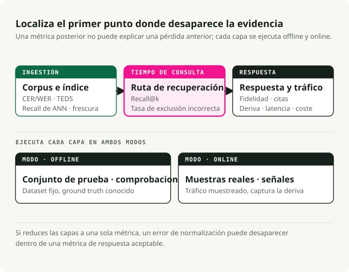
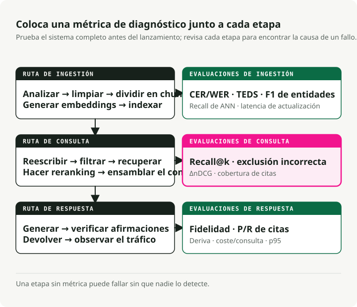
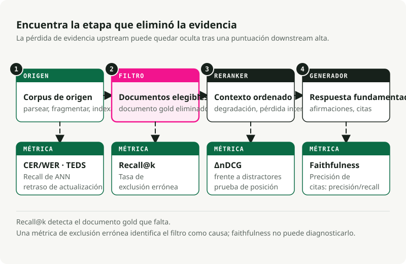

Traducción automática
Este artículo se tradujo automáticamente a partir de la versión original en inglés.
Evaluación de RAG: métricas para cada etapa de un sistema RAG en producción
Parte 1 de la serie Production RAG
Un sistema RAG con filtros rotos puede estar funcionando durante meses antes de que nadie se dé cuenta. El pipeline devuelve respuestas, los paneles de latencia siguen en verde y la única señal de que algo va mal es que las propias respuestas son sutilmente incorrectas. Lo “sutilmente incorrecto” no despierta a nadie.
Unos logs mejores no detectarán esto. La evaluación sí, pero solo si cubre cada etapa del pipeline con su propia métrica. Este artículo es la referencia que me habría gustado tener cuando estaba averiguando qué métricas importan de verdad.
¿Quieres ir al grano y ejecutar código?
Empaqueté las métricas de este artículo en un repo complementario ejecutable: slavadubrov/rag-evals-demo. make eval ejecuta la suite completa — métricas de retrieval, híbrido + RRF, mejora por reranker, falsa exclusión de filtros, faithfulness, lost-in-the-middle, LLM-as-judge con mitigación de sesgo, latencia — sobre el corpus SciFact. make benchmark barre chunking × embedding × LLM y escribe un informe en markdown. Los notebooks 00–09 recorren cada métrica por separado; mismo vocabulario que este artículo, números reales, sin Docker (Qdrant embebido).
TL;DR
- La evaluación define el sistema. Una etapa sin métrica es una etapa que falla en silencio.
- Un stack de evaluación útil cubre ingesta, retrieval, grounding de generación, conformidad con la ontología y señales del sistema. RAGAS, TruLens, DeepEval, Arize Phoenix y el TREC 2024 RAG Track te dan tooling. No eligen tus métricas por ti.
- Para RAG basado en metadatos y ontología, el fallo más común es el filtro silencioso. Una etiqueta errónea o un predicado hard frágil hunde el recall hasta cero. Faithfulness puede seguir pareciendo correcto porque el modelo dijo fielmente “no lo sé”.
Las siguientes entregas profundizan en secciones concretas. Usa esta como índice.
Parte 1 — Por qué evaluar primero
La señal senior
En un proyecto RAG, el diagrama de arquitectura no debería ser el primer artefacto. Debería ser el conjunto de evaluación.
No puedes elegir entre BM25 y dense retrieval, recursive y semantic chunking, o Cohere Rerank y BGE hasta que sepas qué estás optimizando. “Mejores respuestas” no es una métrica. “Faithfulness ≥ 0.85 sobre un golden set de 200 consultas que cubre nuestras tres intenciones principales, con latencia p95 < 1.5s y tasa de falsa exclusión de filtros < 2%” sí es una métrica.
Define el harness antes de escribir el código de retrieval. El primer harness estará mal, y lo revisarás. Revisar una métrica es mucho más barato que revisar un sistema que ya has puesto en producción.
Tres capas, no un único número
El RAG moderno es un pipeline, así que la evaluación también tiene que ser un pipeline. No hay un único número que capture todos los modos de fallo.
La evaluación en producción tiene tres capas: offline (¿se preparó correctamente la base de conocimiento?), online (¿se encontró y utilizó la evidencia correcta para esta consulta?) y post-generación (¿la respuesta es fiel y verificable?). Cada capa plantea una pregunta distinta. Si las colapsas en una sola puntuación, puedes pasar por alto fallos básicos, como un bug de normalización que destruye el recall.

La misma división aclara la evaluación online frente a offline. Offline se ejecuta contra un dataset fijo con ground truth conocido. Es reproducible, barato para iterar y el lugar correcto para selección de componentes, comparaciones A/B y puertas de CI. Online se ejecuta contra tráfico real. Captura señales que no puedes fingir offline: tasa de regeneración, dwell time, thumbs y deriva real de consultas. Tiene ruido y es más difícil de instrumentar bien.
Necesitas ambas. Solo offline no detecta la deriva en vivo. Solo online hace que las regresiones sean difíciles de reproducir. Hacer ambas cosas da más trabajo, pero es la única configuración que te da feedback útil antes y después del lanzamiento.
A nivel de componente vs. extremo a extremo
Hay dos errores habituales. Evaluar solo extremo a extremo te dice que el sistema está roto, pero no dónde. Evaluar solo componentes puede mostrar que cada parte pasa mientras el sistema completo sigue fallando. La solución es tener unas pocas métricas principales extremo a extremo para decisiones go/no-go, más métricas por componente para diagnóstico. Las métricas de retrieval detectan regresiones del retriever. Las de generación detectan regresiones del generador. La corrección de respuesta extremo a extremo detecta fallos de integración.
Los frameworks de referencia (recorrido con opinión)
| Framework | Lo hace mejor en | Dónde flojea |
|---|---|---|
| RAGAS | Métricas RAG sin referencia (faithfulness, relevancia de la respuesta, precision/recall de contexto); el vocabulario de facto | Coste de LLM-judge; componentes de score opacos al depurar; valores por defecto centrados en inglés |
| ARES | Jueces clasificadores entrenados por pipeline; menos anotaciones que enfoques tipo RAGAS; alta precisión en sistemas cercanos | Setup más pesado; realmente tienes que entrenar modelos |
| TruLens | Funciones de feedback componibles con buena explicabilidad; trazas OpenTelemetry; apto para producción | Menos baterías incluidas para métricas específicas de RAG que RAGAS |
| DeepEval | Tests unitarios estilo Pytest para salidas de LLM; G-Eval, métricas personalizadas, nativo para CI/CD | Uso intensivo de LLM-judge = picos de coste |
| Arize Phoenix | Trazado potente y visualización de embeddings; detecta visualmente embedding drift; nativo OTEL | Tú defines las métricas |
| TREC 2024 RAG Track | Benchmark público para evaluación por nuggets (AutoNuggetizer), support evaluation y fluency en MS MARCO Segment v2.1 | No es una herramienta de runtime; es un benchmark para calibrarte |
Mi stack por defecto es RAGAS para el vocabulario de métricas, DeepEval para puertas de CI, Phoenix para trazado en producción, más código propio para métricas específicas de ontología. Crecerás más allá de lo que elijas al principio. Escoge el framework que facilite las métricas personalizadas.
Para benchmarks, usa BEIR (Thakur et al., NeurIPS 2021) para generalización zero-shot en retrieval, MTEB para calidad general de embeddings, MIRACL para retrieval multilingüe y el TREC 2024 RAG Track para evaluación RAG extremo a extremo.
Parte 2 — El pipeline con puntos de evaluación
Un sistema RAG en producción es más grande que “embed documentos, recupera chunks, llama a un LLM”. Cualquier etapa entre la adquisición del documento y la entrega de la respuesta puede fallar.

Cada etapa del diagrama tiene al menos una métrica. Una etapa sin métrica puede fallar sin que nadie se dé cuenta.
Las tres lanes reflejan dónde ocurren los fallos. La lane offline cubre todo lo que pasa antes de que exista una consulta: parsing, limpieza, chunking, embedding, indexación. La lane online cubre todo lo que pasa después de que llegue una consulta: rewriting, retrieval, reranking, ensamblado de contexto. La lane post-generación cubre las comprobaciones después de que el modelo escriba una respuesta: faithfulness, verificación de citas, señales de deriva y telemetría de producción.
Los errores se acumulan a lo largo de la cadena. Un mal parsing limita el chunking. Un mal chunking limita el retrieval. Un mal retrieval limita el reranking. Un mal reranking limita la generación. Faithfulness solo mide la respuesta final, nunca la causa aguas arriba.
Parte 3 — Evaluación offline de la ingesta
Muchos fallos de RAG en producción empiezan en la ingesta. El sistema funciona con documentos de prueba limpios, y luego falla con PDFs reales, escaneos, tablas y páginas desordenadas del corpus.
Adquisición y parsing de documentos
Qué medir:
- Completitud de extracción de texto:
extracted_chars / expected_charssobre una muestra etiquetada, calculada por clase de documento. No hay un paquete canónico — escribe un harness pequeño que compare la salida del parser con una referencia limpiada a mano. Vigila notas al pie, cabeceras y pies de figura ausentes. -
Precisión de OCR: CER (Character Error Rate) y WER (Word Error Rate), las métricas estándar de speech/OCR:
\[ \text{CER} = \frac{S + D + I}{N}, \qquad \text{WER} = \frac{S_w + D_w + I_w}{N_w} \]donde \(S\), \(D\), \(I\) son sustituciones, borrados e inserciones a nivel de carácter y \(N\) es el número de caracteres de referencia (subíndice \(w\) para la versión por palabras). Un CER del 1–2% es bueno para texto impreso; >10% es inservible. Para material manuscrito o multilingüe, ≤20% puede seguir siendo utilizable. Calcúlalo con
jiwer(jiwer.cer(refs, hyps),jiwer.wer(refs, hyps)) o HuggingFaceevaluate. Para corpus de evaluación, FUNSD y SROIE son los benchmarks públicos.from jiwer import cer, wer refs = ["Mars has two moons, Phobos and Deimos."] hyps = ["Mars has two m00ns, Phobos and Deirnos."] print(f"CER = {cer(refs, hyps):.3f}") # CER = 0.077 print(f"WER = {wer(refs, hyps):.3f}") # WER = 0.286 -
Fidelidad de extracción de tablas: TEDS (Tree-Edit-Distance-based Similarity) mide cuánto se parece un árbol HTML de tabla predicho a la referencia, normalizado por el tamaño del árbol mayor. De Zhong et al., 2020 (PubTabNet):
\[ \text{TEDS}(T_a, T_b) = 1 - \frac{\text{EditDist}(T_a, T_b)}{\max(|T_a|, |T_b|)} \]TEDS usa tanto la estructura (filas, columnas, spans) como el contenido de las celdas; TEDS-S elimina el contenido y puntúa solo la estructura. Implementación de referencia:
teds.pyde PubTabNet (usaaptedpor debajo). Para corpus de evaluación, consulta PubTabNet, FinTabNet y SciTSR. Los parsers ingenuos suelen fallar con tablas; haz benchmark antes de confiar en ellos. -
Preservación de layout / estructura: orden de headings, integridad de listas, orden de lectura en PDFs de varias columnas. Usa DocLayNet como benchmark etiquetado; para una comparación de parsers listos para usar,
unstructured,pymupdfy un parser VLM comodoclingcubren la mayor parte del espacio de diseño.
Mi opinión: haz benchmark de tres parsers (una baseline con Tesseract, un modelo VLM-OCR y tu candidato vendor) sobre una muestra estratificada de clases reales de documentos (escaneos limpios, fotos, páginas con muchas tablas, multilingüe, matemáticas, manuscrito) a DPI fijo. Reporta CER/WER por clase más TEDS para páginas con tablas. Sin eso, estás adivinando.
Limpieza y normalización
- Precisión de eliminación de boilerplate: precision/recall frente a spans de boilerplate etiquetados por humanos. Eliminar demasiado destruye contenido relevante; eliminar poco contamina los embeddings. Herramientas para comparar:
trafilatura,jusText,Resiliparse. Barbaresi (2021) las compara cara a cara. - Normalización Unicode: el porcentaje de documentos que producen salidas NFC y NFKC idénticas (calculado con la stdlib
unicodedata.normalize) es una señal útil de deriva. Los desajustes son como los zero-width joiners y caracteres parecidos destruyen el recall del retrieval. - Precisión de detección de idioma: F1 sobre una muestra multilingüe etiquetada. Crítico para índices multilingües. Usa
fasttext-langdetect(ellid.176de Facebook),lingua-pyocld3; FLORES-200 es el benchmark estándar para idiomas de pocos recursos. -
Eficacia de deduplicación (MinHash / LSH): precision/recall de tu detector de casi duplicados frente a un conjunto etiquetado a mano. La idea de fondo: estimar la similitud de Jaccard \(J(A, B) = \frac{|A \cap B|}{|A \cup B|}\) entre conjuntos de shingles de documentos mediante \(k\) hashes de permutación aleatoria (Broder, 1997) y agrupar casi duplicados con LSH banding (Indyk & Motwani, 1998). MinHash estándar con 128 funciones hash y LSH banding ajustado a un umbral de Jaccard de 0.7–0.85 es el valor por defecto; haz benchmark con tus datos porque el umbral correcto depende del corpus. Sigue la tasa de false-merge (corrompe respuestas) por separado de la de missed-merge (malgasta espacio de índice).
datasketches el paquete Python canónico:from datasketch import MinHash, MinHashLSH def shingles(text: str, k: int = 5) -> set[str]: text = text.lower() return {text[i:i + k] for i in range(len(text) - k + 1)} def to_minhash(text: str, num_perm: int = 128) -> MinHash: m = MinHash(num_perm=num_perm) for s in shingles(text): m.update(s.encode("utf-8")) return m docs = { "d1": "Mars has two moons, Phobos and Deimos.", "d2": "Mars has two moons, Phobos and Deimos!", # near-dup "d3": "Curiosity rover landed on Mars in 2012.", } lsh = MinHashLSH(threshold=0.8, num_perm=128) for did, text in docs.items(): lsh.insert(did, to_minhash(text)) print(lsh.query(to_minhash(docs["d1"]))) # ['d1', 'd2'] -
Limpieza de PII: precision y recall, calculados por separado por tipo de entidad (emails, SSN, nombres, direcciones). Los errores de recall crean riesgo de cumplimiento; los errores de precision dañan la calidad de la respuesta. Fija el punto operativo con el equipo legal. Herramientas: Microsoft Presidio (la más completa),
scrubadubo un modelo NER fine-tuned sobre un conjunto etiquetado.
Chunking — la etapa que decide el retrieval en silencio
El chunking es una de las decisiones de mayor impacto en RAG. La estrategia equivocada puede producir una diferencia de varios puntos en recall con los mismos embeddings. Los benchmarks de NVIDIA de 2024 dieron al chunking por página la mayor precisión con la menor varianza para documentos paginados; semantic chunking (agrupar frases adyacentes por similitud de embeddings y cortar en límites disímiles — implementado en SemanticChunker de LangChain y SemanticSplitterNodeParser de LlamaIndex) puede mejorar el recall frente al chunking con ventanas fijas; recursive character splitting (probar primero saltos de párrafo, luego de frase y luego de palabra, hasta que cada chunk encaje en el tamaño objetivo — ver RecursiveCharacterTextSplitter de LangChain) en 400–512 tokens con 10–20% de solape sigue siendo un buen valor por defecto para texto general.
Métricas a seguir:
- Coherencia de chunk: \(\text{coherence} = \overline{\cos(s_i, s_j)}_{\text{within}} - \overline{\cos(s_i, s_j)}_{\text{across boundary}}\), donde \(s_i\) son embeddings de frases. Los chunks sanos son internamente similares y disímiles en el borde. Calcúlalo con
sentence-transformersmásscikit-learny sucosine_similarity. - Calidad de frontera: “¿es este un corte razonable?” etiquetado por humanos sobre una muestra, más una comprobación estructural de que los chunks no parten tablas, listas o secciones numeradas (tu bug de producción más habitual).
- Tamaño óptimo de chunk: barre tamaños de token (128, 256, 512, 1024) y representa Recall@k frente a tamaño en tu golden set. Elige el codo de la curva. No elijas lo que decía el tutorial.
- Eficacia del solape: haz una ablación de la fracción de solape (0%, 10%, 20%, 30%) y mide Recall@k. Rendimientos decrecientes más allá de ~20% en la mayoría de corpus.
- Fidelidad de atribución del chunk: porcentaje de chunks que conservan un puntero de fuente verificable (número de página, anchor de sección, ID de documento). La auditabilidad exige esto.
- Late vs. early chunking: late chunking (Günther et al., 2024) embebe el documento completo y luego lo segmenta, preservando contexto global (implementación de referencia en
jina-embeddings-v3). Contextual Retrieval (Anthropic, 2024) antepone contexto generado por LLM a cada chunk. Ambos añaden coste. Haz benchmark en tu corpus antes de adoptar cualquiera.
Mi opinión: el chunking estructural (dividir por headings, tablas y secciones — implementado por parsers como unstructured.io o recorriendo el AST que tu parser ya produjo) está infrautilizado. Si tus documentos tienen estructura, úsala antes de añadir heurísticas de similitud. Recursive character splitting es la baseline; semantic chunking merece la sobrecarga sobre todo en prosa no estructurada.
Extracción y enriquecimiento de metadatos
- NER precision/recall/F1: por tipo de entidad, sobre un subconjunto etiquetado. Estándar estilo CoNLL/MUC. Calcúlalo con
seqeval(from seqeval.metrics import f1_scorepara la versión consciente de etiquetas BIO/IOB), o scikit-learn para comparaciones de conjuntos de spans. CoNLL-2003 y OntoNotes 5.0 son los corpus de referencia canónicos. - F1 de extracción de relaciones: aún más importante para sistemas basados en ontologías. Etiqueta a mano 200 documentos. TACRED y DocRED son los benchmarks públicos; para código de producción, los pipelines de relaciones de
opennreyspaCyson puntos de partida razonables. - Precisión de extracción de títulos / headings: exact-match más similitud de Levenshtein normalizada (\(1 - \frac{\text{edit\_dist}(a, b)}{\max(|a|, |b|)}\)) frente al ground truth —
python-Levenshteinorapidfuzzte dan ambas en una sola llamada. - Preservación jerárquica de metadatos: porcentaje de chunks que retienen correctamente su sección padre, documento padre y ruta de ascendencia. Esta es la métrica que decide si tu RAG puede responder preguntas del tipo “¿qué dice el hijo de la policy X?”.
Generación de embeddings
- Benchmarks de selección de modelo: MTEB para capacidad general (nDCG@10 es la métrica principal; el paquete Python de MTEB te permite reproducir el leaderboard localmente), BEIR para generalización zero-shot, MIRACL para multilingüe. Los mejores modelos de retrieval se agrupan en una banda estrecha de nDCG@10, pero las puntuaciones de MTEB en inglés predicen mal el rendimiento en idiomas de menos recursos.
- Evaluación específica de dominio: no confíes en benchmarks generales para corpus de dominio. Construye un golden set de dominio con 200–500 pares consulta/documento y reordena modelos candidatos en él con
ranxopytrec_eval. He visto repetidamente un modelo que es #5 en MTEB superar a uno que es #1 por más de 15 puntos en un dominio concreto. - Detección de embedding drift: sigue KL distribucional o deriva basada en modelo entre una ventana de referencia fija y embeddings de producción en rolling; la estabilidad de nearest-neighbor para un conjunto fijo de probes es la señal práctica más simple.
evidentlyyalibi-detectimplementan detectores de deriva estadísticos y basados en modelo. El estudio comparativo de Evidently favorece la detección basada en modelo como valor por defecto. - Multi-vector vs. single-vector: la interacción tardía (ColBERT / ColBERTv2 — ver Khattab & Zaharia, 2020; implementaciones de referencia en RAGatouille y PyLate) suele ganar fuera de dominio a costa de 6–10× más almacenamiento (con compresión tipo PLAID; sin comprimir es mucho mayor). Merece la pena cuando tu corpus está lejos de la distribución de entrenamiento del modelo de embeddings. Si no, quédate con single-vector.
Construcción del índice
- Recall@k bajo aproximación: compara el índice approximate-nearest-neighbour (ANN) con una baseline exacta por fuerza bruta al mismo k — en FAISS, eso es
IndexHNSWFlat(oIndexIVFFlat) frente aIndexFlatIP/IndexFlatL2. Apunta a ≥95% recall@10 frente a flat. El proyectoann-benchmarkssigue curvas de Pareto recall–QPS entre librerías. - Ajuste de HNSW: HNSW (Hierarchical Navigable Small World — un grafo de proximidad en capas; ver Malkov & Yashunin, 2018, implementado en
hnswlib, elIndexHNSWFlatde FAISS y la mayoría de vector DBs) expone tres parámetros:M(fan-out del grafo),efConstruction(anchura de candidatos en construcción),efSearch(anchura de candidatos en consulta). Valores pragmáticos por defecto: M=16–32, efConstruction=150, efSearch empezando en 100 y ajustando al alza hasta que el recall se estabilice. Un dataset de 10M vectores con efSearch=500 puede alcanzar 98% recall a 5ms; efSearch=100 baja al 85% en 1ms. Elige el punto de recall que exija tu conjunto de evaluación. - Ajuste de IVF: IVF (Inverted File index — particiona vectores con k-means en celdas
nlist, y luego en consulta escanea lasnprobeceldas más cercanas; verIndexIVFFlatyIndexIVFPQde FAISS). Usanlist≈ √N como heurística inicial y ajustanprobeen runtime. IVF suele gestionar búsquedas filtradas con más eficiencia que HNSW, lo que importa para sistemas basados en ontologías con muchos predicados de metadatos. - Retardo de frescura de actualizaciones: tiempo desde el commit del documento hasta que puede recuperarse. Sigue p50 y p99. Para sistemas con requisitos regulatorios, sigue también el porcentaje de consultas servidas contra índices obsoletos.
Parte 4 — Evaluación online de la inferencia
La lane online es donde viven la mayoría de métricas de producción. Muchos equipos se quedan en Recall@k. No basta.
Comprensión y rewriting de consultas
- Calidad de expansión de consulta: mejora de Recall@k en tu golden set, consulta expandida frente a consulta original. Si no es al menos +5% en consultas difíciles, tu expansor perjudica más de lo que ayuda. Las baselines clásicas de PRF (pseudo-relevance feedback) como RM3 y Bo1 siguen siendo comprobaciones de cordura útiles; la expansión basada en LLM tiene que superarlas.
- Evaluación de HyDE: HyDE (Gao et al., 2022) genera una respuesta hipotética con el LLM, la embebe y recupera contra eso — una herramienta útil que añade latencia y una superficie de alucinación. Evalúala por mejora de Recall@10 en consultas fuera de dominio (donde destaca) y confirma que no degrade consultas dentro de dominio (donde puede perjudicar). Úsala como fallback cuando la confianza de retrieval sea baja, no como valor por defecto. Ancla el flujo con un cross-encoder reranker aguas abajo para validar retrievals guiados por hipótesis.
- Generación de múltiples consultas: Recall@k de la unión de N rewrites frente a consulta única. Rendimientos decrecientes más allá de 3–4 rewrites. Implementaciones:
MultiQueryRetrieverde LangChain,QueryFusionRetrieverde LlamaIndex. - Precisión de clasificación de intención: precision/recall/F1 estándar por intención (calculado con
sklearn.metrics.classification_report), pero la métrica operativa es la corrección del routing — ¿se invoca el pipeline downstream correcto? - Routing adaptativo: Adaptive-RAG (Jeong et al., NAACL 2024) defiende que no toda consulta merece la misma estrategia de retrieval. Sigue la precisión del router como un problema de clasificación frente a un conjunto etiquetado de “no necesita retrieval / one-shot / iterativo”.
Métricas de retrieval
Estas son las métricas base. Si no las sigues, no puedes saber si el retrieval está mejorando.
| Métrica | Qué mide | Cuándo usarla |
|---|---|---|
| Recall@k | porcentaje de consultas donde algún doc relevante está en el top k | la métrica de retrieval más importante para RAG; si es baja, nada downstream importa |
| Precision@k | porcentaje del top-k que es relevante | útil cuando la ventana de contexto es el cuello de botella |
| MRR | media de 1/rank del primer doc relevante | cuando los usuarios solo miran el top-1 o top-3 |
| nDCG@k | ganancia con descuento por posición ponderada por grados de relevancia | métrica de retrieval estándar para relevancia graduada |
| MAP | media sobre consultas de average precision | cuando te importa toda la lista ordenada |
| Hit Rate@k | versión binaria de Recall@k | métrica rápida de cordura |
| Coverage | porcentaje de docs del golden set recuperados alguna vez entre todas las consultas | detecta huecos sistemáticos en el índice |
Las fórmulas, como referencia (relevancia binaria con conjunto relevante \(R_q\) para la consulta \(q\), y \(\text{rel}_i = 1\) si el \(i\)-ésimo doc recuperado está en \(R_q\)):
Para relevancia graduada, \(\text{rel}_i \in \{0, 1, 2, \dots\}\); nDCG binario es el caso especial usado en el código de abajo. MAP es la media sobre consultas de \(\text{AP}_q = \frac{1}{|R_q|}\sum_{i: \text{rel}_i = 1} \text{Precision@}i\). Véase Manning, Raghavan, Schütze, Introduction to Information Retrieval, capítulo 8, para las derivaciones.
Para código de producción, usa ranx, pytrec_eval o ir_measures — implementan toda la familia de métricas TREC y manejan correctamente la relevancia graduada. Objetivos iniciales razonables: Recall@10 ≥ 0.85, MRR ≥ 0.6, nDCG@10 ≥ 0.7. Deben fijarse frente a un golden set realista, no sacarse de un tutorial.
El harness de prueba para esto es corto. Puedes ejecutarlo desde un notebook antes incluso de haber elegido una vector database.
from math import log2
from statistics import mean
# synthetic gold set: query_id -> set of relevant doc ids
gold = {
"q1": {"d3"},
"q2": {"d7", "d2"},
"q3": {"d11"},
"q4": {"d5"},
}
# ranked retrieval results: query_id -> ranked list of doc ids (top-10)
runs = {
"q1": ["d8", "d3", "d1", "d4", "d2", "d9", "d6", "d10", "d12", "d13"],
"q2": ["d2", "d6", "d4", "d7", "d1", "d3", "d8", "d11", "d5", "d9"],
"q3": ["d11", "d2", "d3", "d4", "d1", "d6", "d7", "d8", "d10", "d12"],
"q4": ["d1", "d2", "d3", "d6", "d8", "d9", "d10", "d12", "d13", "d14"],
}
def recall_at_k(ranked, gold_set, k):
if not gold_set:
return 0.0
hit = sum(1 for d in ranked[:k] if d in gold_set)
return hit / len(gold_set)
def reciprocal_rank(ranked, gold_set):
# MRR contribution per query: 1/rank of the first relevant doc.
for rank, d in enumerate(ranked, start=1):
if d in gold_set:
return 1.0 / rank
return 0.0
def ndcg_at_k(ranked, gold_set, k):
# binary relevance: rel ∈ {0, 1}
gains = [1.0 if d in gold_set else 0.0 for d in ranked[:k]]
dcg = sum(g / log2(i + 2) for i, g in enumerate(gains))
# ideal DCG: all gold docs ranked first, capped by k
n_gold_in_topk = min(k, len(gold_set))
idcg = sum(1.0 / log2(i + 2) for i in range(n_gold_in_topk))
return dcg / idcg if idcg else 0.0
K = 5
print(f"Recall@{K}: {mean(recall_at_k(runs[q], gold[q], K) for q in gold):.3f}")
print(f"MRR: {mean(reciprocal_rank(runs[q], gold[q]) for q in gold):.3f}")
print(f"nDCG@{K}: {mean(ndcg_at_k(runs[q], gold[q], K) for q in gold):.3f}")
# Recall@5: 0.750
# MRR: 0.625
# nDCG@5: 0.627
Esa es tu puerta de CI para retrieval. Conéctala a un golden set de 200 consultas y ejecútala en cada PR. Si uno de los tres números empeora, bloquea el merge y corrige la regresión.
El repo complementario fija los números exactos de arriba (Recall@5 = 0.750, MRR = 0.625, nDCG@5 = 0.627) como un test unitario en tests/test_retrieval_metrics.py; el notebook 01 barre Recall@k / MRR / nDCG sobre un índice real de SciFact, y el harness con forma de producción vive en evaluation/retrieval.py.
Retrieval híbrido y reciprocal rank fusion
BM25 (el clásico scorer léxico sparse de Robertson & Walker, 1994 — matching exacto de términos con ponderación tipo TF-IDF y normalización por longitud, disponible en rank_bm25, Elasticsearch/OpenSearch y la mayoría de motores de búsqueda) más fusión dense vía Reciprocal Rank Fusion (Cormack, Clarke, Buettcher, SIGIR 2009) con k=60 es un valor por defecto sólido. RRF es agnóstico al score, así que evita los problemas de normalización de scores que aparecen con la interpolación lineal. Si tienes 50+ pares de consultas etiquetadas, prueba combinación convexa y ajusta α. Híbrido más un cross-encoder reranker suele superar retrieval dense-only o sparse-only en corpus técnicos, de logs y de código. En corpus muy semánticos, la mejora puede ser pequeña. Mídelo con tus datos; una mala configuración de fusión puede rendir peor que dense-only.
La implementación cabe en unas pocas líneas.
from collections import defaultdict
# two retrieval lanes: dense embeddings and BM25.
dense = ["d3", "d7", "d1", "d4", "d2", "d9", "d10"]
sparse = ["d2", "d3", "d8", "d1", "d11", "d4", "d6"]
def rrf(rankings: list[list[str]], k: int = 60) -> list[tuple[str, float]]:
"""Reciprocal Rank Fusion (Cormack et al., SIGIR 2009).
score(d) = sum over rankings of 1 / (k + rank(d))
Score-agnostic: only rank position matters. k=60 is the canonical default.
"""
scores: dict[str, float] = defaultdict(float)
for ranking in rankings:
for rank, doc in enumerate(ranking, start=1):
scores[doc] += 1.0 / (k + rank)
return sorted(scores.items(), key=lambda kv: kv[1], reverse=True)
fused = rrf([dense, sparse], k=60)
for doc, score in fused[:5]:
print(f"{doc} score={score:.5f}")
# d3 score=0.03252 <- rank 1 dense, rank 2 sparse
# d2 score=0.03178 <- rank 5 dense, rank 1 sparse
# d1 score=0.03150
Observa lo que RRF no hace: nunca mira los scores de similitud en bruto. Un retriever dense que devuelve cosine 0.98 y una lane BM25 que devuelve score 17.4 no son directamente comparables. Si los normalizas con z-scores o min-max scaling, puedes acabar favoreciendo la lane con mayor varianza en ese batch.
RRF usa solo el rank. Si un retriever pone un documento en la posición 2, ese voto vale 1 / (60 + 2), independientemente del score bruto que lo haya producido.
Híbrido + RRF en SciFact: el notebook 02 compara dense vs BM25 vs RRF con deltas por consulta. El fusionador con forma de producción está en retrieval/hybrid_rrf.py; tests/test_rrf.py fija el orden canónico de d3 / d2 / d1 en k=60.
Reranking
- ΔnDCG / ΔMRR: la única métrica honesta de reranker — la mejora frente a no usar rerank, en tu golden set, a la profundidad que use realmente tu aplicación. Calcúlala ejecutando tus métricas de retrieval con y sin reranker sobre conjuntos de candidatos idénticos.
- Cross-encoder vs. bi-encoder: un bi-encoder embebe consulta y doc de forma independiente (un vector por lado) y puntúa por dot product; un cross-encoder concatena query+doc y ejecuta un único forward pass que atiende conjuntamente a ambos. Los cross-encoders casi siempre ganan en relevancia, a costa de un forward pass por candidato. Implementación de referencia:
sentence-transformersCrossEncoder. En benchmarks publicados, BGE-reranker-v2-m3 alcanza ~80ms por 100 candidatos en GPU y ~350ms en CPU, y iguala a Cohere Rerank en calidad sin coste recurrente. Trata estos números como órdenes de magnitud — tu hardware y batch size los moverán. - Listwise vs. pointwise: pointwise puntúa cada par (query, doc) de forma independiente; listwise puntúa conjuntamente toda la lista de candidatos para que el modelo optimice directamente un objetivo de ranking. Listwise (BGE, ZeRank-2 con salidas calibradas) suele ganar en nDCG; pointwise es más fácil de umbralizar. Las probabilidades calibradas de ZeRank-2 te permiten usar umbrales simples de
score > 0.7; las puntuaciones en bruto de BGE/MiniLM necesitan ajuste por corpus.
from sentence_transformers import CrossEncoder
reranker = CrossEncoder("BAAI/bge-reranker-v2-m3")
query = "How do I rotate database credentials in production?"
candidates = [
"Production database credentials are rotated via Vault every 30 days.",
"The new logo was unveiled at the all-hands meeting.",
"To rotate prod DB creds, run the `rotate-secrets` GitHub Action.",
]
scores = reranker.predict([(query, c) for c in candidates])
ranked = sorted(zip(candidates, scores), key=lambda x: -x[1])
for doc, score in ranked:
print(f"{score:+.3f} {doc}")
Un reranker suele ser la incorporación más valiosa a un pipeline RAG básico. En la mayoría de corpus que he visto, añadir uno mueve Precision@1 entre un 15–40%. Si tu RAG no lo tiene, añádelo antes de dedicar tiempo a ajustes menores de retrieval.
ΔnDCG y ΔPrecision@1 de un cross-encoder sobre SciFact: notebook 03; módulo: retrieval/reranker.py.
Construcción de contexto y lost-in-the-middle
Aquí es de donde vienen muchos fallos de “buen retrieval, mala respuesta”.
- Relevancia de contexto: score de relevancia por chunk de RAGAS
ContextRelevancyo de un cross-encoder, agregado como media y como porcentaje de chunks por debajo de un umbral. - Utilización de contexto: de los chunks colocados en el contexto, cuántos se citaron o usaron realmente en la respuesta. Calcúlalo como \(\frac{|\text{cited chunks}|}{|\text{retrieved chunks}|}\) sobre una muestra etiquetada. Una utilización baja (< 30%) significa que estás pagando por tokens que no necesitas.
- Detección de lost-in-the-middle: evaluación sintética donde colocas el chunk gold en posiciones {primera, media, última} de un contexto largo y mides la corrección de la respuesta. La degradación en forma de U es real y está documentada en Liu et al. (TACL 2023). Los modelos modernos lo hacen mejor que los de 2023, pero el sesgo persiste. Mitigaciones: rerank y luego reordena el top-k para que el chunk con mayor score vaya primero o último (
LongContextReorderde LangChain hace exactamente eso), o comprime agresivamente los chunks intermedios. Mídelo con una evaluación estratificada por posición, no solo con una puntuación agregada. Una evaluación estratificada por posición, trabajada y ejecutable, está en el notebook 06 (módulo:evaluation/lost_in_middle.py). - Compresión de contexto: reporta la ratio de compresión (tokens de entrada / tokens de salida) junto con la corrección de respuesta. Herramientas:
ContextualCompressionRetrieverde LangChain, LongLLMLingua. Si la compresión baja la corrección más de 2 puntos, te has pasado.
Parte 5 — La tasa de falsa exclusión de filtros
Esta métrica tiene su propia sección porque la mayoría de equipos la omiten, y causa fallos reales en producción.
Un filtro hard de metadatos como tenant_id = X AND product = Y AND locale = en-US puede reducir el recall efectivo a cero sin cambiar las métricas estándar de retrieval. El doc gold queda excluido antes de que empiece el ranking. Recall@k se calcula sobre el conjunto de candidatos supervivientes, así que puede parecer correcto. Faithfulness se calcula contra el contexto recuperado, así que también puede parecer correcto; el modelo dijo fielmente “no lo sé”.
La rama roja del árbol es el fallo habitual: el documento correcto existe, pero el filtro lo elimina antes del retrieval.

La métrica
filter_false_exclusion_rate =
(# queries where gold doc was excluded by metadata filter) /
(# queries with at least one gold doc)
Para calcularla, necesitas (a) IDs de documentos ground-truth para cada consulta de evaluación y (b) instrumentación que registre los predicados de filtro aplicados, no solo los resultados finales. Un objetivo razonable es < 2% sobre tráfico de producción. Si la tasa es mayor, tu lógica de filtros está destruyendo el recall.
Aquí tienes una implementación funcional que además ilustra por qué el fallo es invisible para un harness de retrieval escrito de forma ingenua.
# A small worked example that drops recall to zero silently.
docs = [
{"id": "d1", "tenant": "acme", "locale": "en-US"},
{"id": "d2", "tenant": "acme", "locale": "en-GB"},
{"id": "d3", "tenant": "globex", "locale": "en-US"},
{"id": "d4", "tenant": "acme", "locale": "en-US"},
{"id": "d5", "tenant": "acme", "locale": "de-DE"},
]
queries = [
# the gold doc lives in en-GB but the dynamic filter forced en-US
{"qid": "q1", "gold": {"d2"}, "filter": lambda d: d["locale"] == "en-US"},
# the gold doc is correctly within the tenant filter
{"qid": "q2", "gold": {"d4"}, "filter": lambda d: d["tenant"] == "acme"},
# the gold doc is in a different tenant — silently dropped
{"qid": "q3", "gold": {"d3"}, "filter": lambda d: d["tenant"] == "acme"},
# the gold doc passes the filter (de-DE locale match)
{"qid": "q4", "gold": {"d5"}, "filter": lambda d: d["locale"] == "de-DE"},
]
def filter_false_exclusion_rate(queries, docs):
n_with_gold, n_excluded = 0, 0
for q in queries:
if not q["gold"]:
continue
n_with_gold += 1
survivors = {d["id"] for d in docs if q["filter"](d)}
if not (q["gold"] & survivors):
n_excluded += 1
return n_excluded / n_with_gold if n_with_gold else 0.0
rate = filter_false_exclusion_rate(queries, docs)
print(f"filter_false_exclusion_rate = {rate:.2%}")
# filter_false_exclusion_rate = 50.00%
# The trap: a recall harness that only iterates over the SURVIVORS will
# either skip the empty-gold queries or report perfect recall on a doomed set.
def naive_recall_over_survivors(queries, docs, k=10):
recalls = []
for q in queries:
survivors = [d for d in docs if q["filter"](d)][:k]
survivor_ids = {d["id"] for d in survivors}
denom = len(q["gold"] & {d["id"] for d in docs})
if denom == 0:
continue # silently drops the query
visible_gold = q["gold"] & survivor_ids
recalls.append(len(visible_gold) / denom)
return sum(recalls) / len(recalls) if recalls else 0.0
print(f"naive recall (filtered universe) = {naive_recall_over_survivors(queries, docs):.2%}")
# naive recall (filtered universe) = 50.00%
assert rate == 0.5
La mitad de las consultas pierden su doc gold por el filtro. El harness ingenuo de recall informa de 50% y culpas al retriever. La tasa de exclusión muestra el problema real: esto es un bug de predicado. A dos consultas se les eliminó la respuesta antes de que el retriever se ejecutara. Ningún modelo puede recuperar un documento que se filtró.
La tasa del 50% anterior se reproduce como un test unitario en el repo complementario: tests/test_filter_exclusion.py::test_50_percent_exclusion_rate. El Notebook 04 lo ejecuta sobre SciFact con metadatos sintéticos para que veas cómo un filtro real reduce a cero el recall; la métrica de runtime (con precisión/recall de predicados como acompañante) está en evaluation/filter_exclusion.py.
Métrica complementaria: precision y recall de predicados
Cuando el filtrado es dinámico (por ejemplo, un LLM extrae predicados de filtro a partir de la consulta), trata el extractor de predicados como un modelo de clasificación y evalúalo como tal. Precision/recall de predicados frente a un conjunto etiquetado de pares (consulta, predicado correcto). Si tu extractor falla un 8% de las veces y aplica filtros hard, tienes un techo duro de recall en torno al 92%, y ningún reranking ayuda.
Soft boost vs. hard filter
Esta métrica obliga a una decisión de diseño. Usa filtros hard cuando la corrección sea binaria: jurisdicción legal, límites de ACL, publicado frente a borrador. Usa soft boosts cuando la relevancia sea graduada: preferencia regional, actualidad, versión. Sin medir la tasa de exclusión, es difícil ver cuándo eliges mal.
La regla de decisión, medible:
For each filter predicate F:
hard_recall_F = retrieval_recall@k with F as a hard filter
soft_recall_F = retrieval_recall@k with F as a +0.X rerank boost
hard_precision = relevant_in_top_k / k under hard filter
soft_precision = relevant_in_top_k / k under soft boost
exclusion_rate = % of queries where the gold doc was filtered out (hard)
Use hard filter only if exclusion_rate < ε AND hard_precision >> soft_precision.
Otherwise prefer soft boost.
Un ε en el rango 1–2% es razonable; menor para dominios de alto riesgo. Una entrada dedicada de esta serie profundiza más en este trade-off.
Parte 6 — Evaluación de generación
Las métricas de retrieval te dicen que el sistema podría responder correctamente. No te dicen que lo hizo. Las métricas de generación cubren ese hueco.
Faithfulness y groundedness
RAGAS faithfulness descompone la respuesta en afirmaciones atómicas (enunciados fácticos breves y autocontenidos), y luego verifica cada una frente al contexto recuperado mediante un juez LLM:
El porcentaje de afirmaciones soportadas es la puntuación. La estructura es más útil que cualquier número aislado, porque te dice qué afirmaciones no están soportadas. El código de producción vive en el paquete ragas — su uso tiene esta forma:
from datasets import Dataset
from ragas import evaluate
from ragas.metrics import faithfulness, answer_relevancy, context_precision
samples = Dataset.from_dict({
"question": ["How many moons does Mars have?"],
"answer": ["Mars has two moons, Phobos and Deimos."],
"contexts": [["Mars has two moons named Phobos and Deimos."]],
"ground_truth": ["Mars has two moons."],
})
result = evaluate(samples, metrics=[faithfulness, answer_relevancy, context_precision])
print(result)
Debajo está el mismo loop desplegado con un juez determinista de sustitución para que puedas ver la forma extremo a extremo.
def extract_claims(answer: str) -> list[str]:
# Production: an LLM call that decomposes the answer.
# Demo: split on sentence-final punctuation.
return [c.strip() for c in answer.replace("?", ".").replace("!", ".").split(".") if c.strip()]
def verify_claim(claim: str, context: str) -> bool:
# Production: an NLI (natural-language inference) model or LLM judge.
# Demo: a deterministic stand-in so the example runs offline.
entailed_pairs = {
"Mars has two moons": True,
"Phobos and Deimos orbit Mars": True,
"Mars has a thick atmosphere": False, # unsupported by context
"Curiosity landed in 2012": True,
}
for k, v in entailed_pairs.items():
if k.lower() in claim.lower() or claim.lower() in k.lower():
return v
words = [w.lower() for w in claim.split() if len(w) > 3]
return all(w in context.lower() for w in words) if words else False
context = (
"Mars has two moons, Phobos and Deimos. NASA's Curiosity rover "
"landed on Mars in 2012."
)
answer = (
"Mars has two moons. Phobos and Deimos orbit Mars. "
"Mars has a thick atmosphere. Curiosity landed in 2012."
)
claims = extract_claims(answer)
verdicts = [(c, verify_claim(c, context)) for c in claims]
faithfulness = sum(1 for _, ok in verdicts if ok) / len(verdicts)
for c, ok in verdicts:
print(f" [{'✓' if ok else '✗'}] {c}")
print(f"faithfulness = {faithfulness:.2f}")
# faithfulness = 0.75 (one unsupported claim about the atmosphere)
La estructura importa. En producción, verify_claim se convierte en un modelo NLI o una llamada a un LLM. El resto del harness sigue igual: extraer, verificar, agregar.
Extracción + verificación de afirmaciones extremo a extremo sobre respuestas generadas en SciFact: notebook 05; módulo: evaluation/faithfulness.py. El repo también ejecuta un verificador estilo HHEM entre familias en el mismo loop para que veas qué familia de jueces coincide con cuál.
Una alternativa específica frente a LLM-as-judge es HHEM-2.1-Open (Hughes Hallucination Evaluation Model, Vectara), un clasificador de 600 MB fine-tuned para detección de alucinaciones. El umbral por defecto suele ser 0.5 (>0.5 = factual, ≤0.5 = alucinado), pero calibra con tu propio conjunto etiquetado. Funciona en CPU y, según se informa, supera a jueces LLM genéricos en AggreFact y RAGTruth. Los comerciales más nuevos HHEM-2.3 y FaithJudge están en la frontera actual de Pareto en el leaderboard de Vectara. Vuelve a hacer benchmark antes de comprometerte; los leaderboards derivan.
Evaluación por hechos atómicos
FActScore (Min et al., EMNLP 2023) descompone generaciones largas en hechos atómicos, recupera evidencia por hecho, etiqueta cada uno como supported / not-supported e informa de la fracción soportada:
Implementación de referencia: shmsw25/FActScore. Funciona bien para biografías, resúmenes y otras salidas long-form. Ojo: hechos triviales repetitivos pueden inflar la puntuación, y los ataques “MontageLie” (hechos verdaderos en orden engañoso) pueden burlarlo. VeriScore maneja afirmaciones con modificadores necesarios; el filtro Core ayuda a evitar el fact-padding.
Precisión de citas
Sigue citation precision (los spans citados realmente soportan la afirmación) y citation recall (las afirmaciones que deberían citarse, se citan):
La support evaluation del TREC 2024 RAG Track es el estándar académico. Upadhyay et al. (SIGIR 2025) informan de que GPT-4o coincide con jueces humanos un 56% de las veces en evaluación manual desde cero, subiendo al 72% con posedición de predicciones del LLM. Eso es útil como multiplicador de fuerza, no como sustituto de evaluación humana en contextos de alto riesgo. Como aproximación automatizada, ALCE (Gao et al., EMNLP 2023) implementa citation precision/recall con verificación basada en NLI.
Corrección de respuesta, completitud, negativa a responder
- Corrección de respuesta frente a ground truth: cuando lo tienes, exact match o token-F1 para tareas de respuesta corta (
evaluate.load("squad")), similitud semántica para respuestas abiertas (bert-score, embedding cosine víasentence-transformers, o RAGASAnswerCorrectness). - Completitud mediante nuggets: un “nugget” es una pieza atómica de información que cualquier respuesta correcta debe contener (por ejemplo, para “¿Cuándo se fundó la empresa?”, los nuggets podrían ser
{year: 1994, founder: Jane Doe}). El AutoNuggetizer de TREC extrae los nuggets gold de una respuesta correcta desde una referencia, y luego puntúa qué fracción cubre el sistema — fuerte correlación con evaluación manual en 21 temas × 45 ejecuciones en TREC 2024. - Comportamiento de abstención: las consultas sin respuesta en el corpus deberían producir abstención, no alucinación. Sigue abstention precision (negativas a responder correctas) y abstention recall (consultas fuera de alcance que activaron abstención). NoMIRACL es el benchmark público; en tu propio dominio, etiqueta una porción de consultas fuera de alcance y sigue la precisión de abstención.
Verificación post-generación
Las ganancias más baratas de fiabilidad suelen venir de comprobaciones deterministas posteriores, no de modelos más grandes.
- Comprobación de grounding de entidades: toda entidad nombrada en la respuesta debe aparecer en (o derivarse de) el contexto recuperado. Una comprobación simple de regex + exact-match (o
spaCyy suentscontra una cadena de contexto normalizada) detecta una fracción sorprendente de alucinaciones. - Verificación de afirmaciones: extrae afirmaciones, ejecuta NLI contra el contexto, falla o marca cualquier cosa por debajo del umbral. Modelos NLI-como-faithfulness:
cross-encoder/nli-deberta-v3-large,MoritzLaurer/DeBERTa-v3-large-mnli-fever-anli-ling-wanli. Añade latencia. Merece la pena en dominios de alto riesgo. - Self-consistency (Wang et al., ICLR 2023): samplea N=5 generaciones a temperatura > 0; informa de la tasa de acuerdo (por ejemplo, proporción de generaciones que coinciden con la respuesta modal, o BERTScore por pares); marca para revisión humana las respuestas de baja concordancia.
- Calibración de confianza: recoge confianza verbalizada (“¿Qué confianza tienes, de 0–1?”) y compárala con la corrección real en el conjunto de evaluación. Representa una curva de calibración e informa del Expected Calibration Error: \(\text{ECE} = \sum_{m=1}^{M} \frac{|B_m|}{n} |\text{acc}(B_m) - \text{conf}(B_m)|\), donde \(B_m\) son bins de confianza. Implementaciones:
netcal,torchmetrics.CalibrationError. Un modelo que dice 0.9 debería acertar el 90% de las veces. Casi nunca lo hacen.
Parte 7 — Evaluación de RAG basado en ontologías
Las métricas estándar anteriores cubren RAG de corpus abierto. Los sistemas basados en ontologías necesitan más. Si tu RAG recupera contra una ontología estructurada, taxonomía o knowledge graph (productos de un catálogo, condiciones en SNOMED, componentes en una BOM, técnicas de seguridad en MITRE ATT&CK), las métricas RAG estándar son necesarias pero insuficientes. También necesitas medir la capa de ontología.
Precisión de entity linking
La primera tarea es mapear una mención de la consulta a una entidad de la ontología (“Aspirin” → wikidata:Q18216, “the 737” → aircraft:Boeing_737).
- Mention-level precision/recall/F1: estándar, frente a spans gold de mención (calculado con
seqevalo un comparador de conjuntos de spans). - Precisión de desambiguación: de las menciones correctamente detectadas, ¿qué fracción se asigna al ID de entidad correcto? Las referencias públicas incluyen ReFinED, REL y GENRE; benchmarks como AIDA-CoNLL y BELB informan de F1 extremo a extremo en el rango 60–90% según sistema y dominio.
- Manejo de NIL: precision/recall sobre “entidad no está en la ontología”. Aquí es donde la mayoría de sistemas EL de producción fallan en silencio. Hacen over-link a una entidad cercana pero incorrecta en vez de abstenerse.
Evaluación consciente de la jerarquía
La precisión plana trata “predijo Sedan cuando la verdad es Hatchback” igual que “predijo Sedan cuando la verdad es Submarine”. Esos errores no son equivalentes.
-
Hierarchical precision/recall/F1 (Kosmopoulos et al., 2015): da crédito a ancestros y descendientes en el DAG de la ontología. Con \(\hat{P}_q\) el nodo predicho más todos sus ancestros y \(T_q\) el nodo real más todos sus ancestros:
\[ hP = \frac{\sum_q |\hat{P}_q \cap T_q|}{\sum_q |\hat{P}_q|}, \quad hR = \frac{\sum_q |\hat{P}_q \cap T_q|}{\sum_q |T_q|}, \quad hF1 = \frac{2 \cdot hP \cdot hR}{hP + hR} \]Se puede implementar en ~30 líneas con
networkxsobre el grafo de la ontología; consultahierarchical-classifier-metricscomo referencia. -
Similitud Wu-Palmer entre la entidad predicha y la gold en la taxonomía (Wu & Palmer, 1994):
\[ \text{WuP}(c_1, c_2) = \frac{2 \cdot \text{depth}(\text{LCA}(c_1, c_2))}{\text{depth}(c_1) + \text{depth}(c_2)} \]donde LCA es el lowest common ancestor en la taxonomía. Disponible directamente en NLTK para WordNet (
from nltk.corpus import wordnet as wn; wn.synset("car.n.01").wup_similarity(wn.synset("truck.n.01"))); para taxonomías personalizadas, calcula LCA connetworkx. -
Tasa de confusión entre siblings/parent: sigue por separado las confusiones con siblings, parents y children —
count_sibling / total_errors,count_parent / total_errors,count_descendant / total_errors. Las confusiones entre siblings suelen indicar menciones ambiguas; las confusiones con parents significan que el modelo está “cubriéndose” subiendo en la jerarquía.
Tasa de falsa exclusión de filtros (de nuevo, ahora crítica)
En sistemas basados en ontologías, los filtros hard suelen venir de la propia ontología (“recupera solo docs etiquetados con la categoría X”). La métrica de tasa de exclusión (definida en la Parte 5) se convierte en una señal principal de corrección. Una predicción de categoría errónea puede llevar silenciosamente el recall a cero.
Conformidad de generación restringida
Cuando tu salida debe ajustarse a una ontología (todo nombre de entidad en la respuesta debe ser un miembro válido de la ontología; todo predicado debe venir de un vocabulario cerrado), mide:
- Schema validity rate: porcentaje de salidas que hacen parse y validan contra el schema de la ontología. Valida con
jsonschemaopydantic. JSONSchemaBench es el benchmark público para salida estructurada general; para schemas específicos de ontología, construye tu propio validador. - Conformidad de vocabulario: porcentaje de entidades nombradas en la salida que son IDs válidos de la ontología — una comprobación de pertenencia a conjunto en una línea contra el vocabulario cerrado.
- Conformidad semántica: la validez es necesaria pero insuficiente. Una salida sintácticamente válida puede elegir una entidad válida pero incorrecta. Combina conformidad con corrección de respuesta downstream.
Los frameworks de constrained decoding (Outlines, XGrammar, Guidance, OpenAI Structured Outputs) pueden llevarte a ~100% de schema validity con un coste de latencia moderado. Según JSONSchemaBench, Guidance lidera ahora mismo la frontera de Pareto eficiencia × cobertura × calidad.
Auditabilidad
Para sistemas basados en ontologías cuyas respuestas se revisan:
- Completitud de citas: porcentaje de afirmaciones fácticas con al menos una cita verificable.
- Profundidad de procedencia: porcentaje de citas que se resuelven completamente hasta un documento fuente con ID estable, no solo un hash de chunk.
- Tasa de reproducibilidad: volver a ejecutar la misma consulta sobre un snapshot fijo devuelve la misma respuesta (salvo temperatura). Si esto no está en ~100% con temp=0, tienes no determinismo en otra parte del pipeline.
Parte 8 — Evaluación a nivel de sistema
Calidad holística de respuesta
- LLM-as-judge (Zheng et al., NeurIPS 2023): el enfoque dominante. G-Eval (un protocolo de LLM-judge en el que el modelo genera su propia rúbrica chain-of-thought antes de puntuar) autogenera la rúbrica a partir de un criterio en lenguaje natural y luego puntúa con salida ponderada por log-prob. Fuerte alineación humana con jueces de clase GPT-4.
- Preferencia por pares: presenta al juez respuesta A frente a respuesta B; registra la preferencia. Evita problemas de calibración de puntuación absoluta. Aproximadamente 80% de acuerdo con jueces humanos en el nivel GPT-4, que coincide con el acuerdo humano-humano.
LLM-as-judge tiene sesgos reales:
- Position bias: los jueces prefieren la primera o la segunda respuesta independientemente de la calidad. Mitigación: aleatoriza el orden, o ejecuta ambos órdenes y promedia.
- Verbosity bias: los jueces prefieren respuestas más largas. La investigación de 2025–2026 es más matizada. Los jueces modernos instruction-tuned penalizan el relleno en tests con longitud controlada, pero premian la completitud real en pares truncados. Aun así, dile explícitamente al juez cómo tratar la longitud y considera win rates con longitud controlada.
- Self-preference bias: GPT-4 prefiere salidas de GPT-4; el sesgo se correlaciona con la perplejidad de salida (los jueces prefieren texto que les resulta familiar). Mitigación: usa una familia de jueces distinta del sistema que estás evaluando. No uses un modelo para juzgarse a sí mismo.
Receta práctica: GPT-4o o Claude como juez, orden aleatorizado, identidades de modelo ocultas, política explícita de longitud en la rúbrica y varias ejecuciones promediadas. Para evaluaciones de alto riesgo, usa dos jueces y analiza los desacuerdos.
Schema-Guided Reasoning para jueces
La salida libre del juez es la principal razón por la que las ejecuciones del juez son difíciles de reproducir. Dos ejecuciones sobre la misma respuesta pueden dar puntuaciones distintas no porque el juez cambiara de opinión, sino porque organizó su razonamiento de otra forma. La solución es forzar al juez a una rúbrica estructurada — lo que he llamado Schema-Guided Reasoning (SGR): define los pasos de razonamiento como un schema de Pydantic, ejecuta con constrained decoding (Outlines, XGrammar, structured outputs de vLLM, response_format de OpenAI), y el juez tiene que emitir cada campo en orden. Sin pasos omitidos, sin sesgo oculto hacia respuestas más largas.
Para evaluación de RAG, el schema descompone el juicio en campos explícitos y auditables en lugar de dejar que el modelo salte directamente a un número:
from pydantic import BaseModel, Field
from typing import Literal
class FaithfulnessJudgment(BaseModel):
extracted_claims: list[str] = Field(
description="Atomic factual claims in the answer, one per item."
)
supported_claims: list[str] = Field(
description="Subset of extracted_claims that are entailed by the context."
)
unsupported_claims: list[str] = Field(
description="Subset that is NOT entailed by the context."
)
failure_mode: Literal[
"none", "fabrication", "overgeneralization", "wrong_entity", "stale_fact"
]
score: float = Field(ge=0.0, le=1.0)
rationale: str
Tres cosas cambian cuando el juez queda restringido a esta forma. La puntuación puede recuperarse a partir de los campos estructurados (len(supported) / len(extracted)), así que el position bias y el verbosity bias tienen menos margen para operar. Los desacuerdos entre dos jueces pasan a poder diagnosticarse — puedes ver exactamente qué afirmación marcó cada juez. Y como la rúbrica es el schema, puedes versionarla como código: un cambio en la rúbrica es un diff de Pydantic, no una reescritura del prompt.
Esto funciona para cualquier juez basado en rúbrica, no solo para faithfulness. La preferencia por pares, el soporte de citas y la corrección de abstención se benefician del mismo tratamiento.
Un harness de G-Eval / pairwise / position-bias / jueces entre familias vive en el notebook 07; módulo: evaluation/llm_judge.py. El barrido de benchmark (make benchmark en el repo) conecta tres modelos frontier-tier — gpt-5-mini, claude-haiku-4-5, gemini-2.5-flash — en un A/B pairwise con rotación de juez para que cada modelo juzgue a los otros dos, haciendo aflorar numéricamente la self-preference.
Latencia y coste
- p50, p95, p99 en cada etapa del pipeline. p95 es el objetivo SLO (service level objective) correcto para la mayoría de aplicaciones; p99 es sobre lo que debes alertar.
- Time-to-first-token frente a tiempo total de generación. A los usuarios les importa TTFT para UX en streaming.
- Desglose por etapa: retrieval, reranking, generation, post-processing. Los mayores picos de p95 casi siempre son rerankers ejecutándose en CPU.
- Total $/query = embedding + retrieval + rerank + generation + storage amortizado. Sigue p50 y p99; la cola larga es donde se va el presupuesto.
- Cache hit rates en la cache de embeddings, cache de retrieval y nivel de KV-cache. Una tasa de aciertos en cache >30% suele ser alcanzable para cargas repetidas y es la optimización de coste más barata.
p50/p95/p99 por etapa con desglose por etapa está integrado en el notebook 08 y en el runner de evaluation/latency.py; el informe de benchmark combina latencia con faithfulness en una sola matriz que puedes volver a ejecutar con make benchmark.
A/B testing
- Unidad de aleatorización: por usuario o por sesión, nunca por consulta (que el mismo usuario vea una calidad inconsistente es peor que cualquiera de los dos sistemas por separado).
- Métricas primary, guardrails, exploratory: regístralas de antemano. La primary suele ser un proxy de satisfacción (thumbs / regeneraciones / dwell). Los guardrails son latencia y coste. Las exploratory son todo lo demás.
- Tamaño de muestra: haz un análisis de potencia antes de lanzar. La mayoría de tests A/B de RAG tienen poca potencia, declaran victorias falsas y ponen regresiones en producción.
Parte 9 — Construcción del conjunto de test
Una métrica solo es tan buena como el conjunto de test sobre el que se ejecuta. Si tu golden set cubre tres intenciones y el tráfico de producción abarca doce, tu número de Recall@10 es una medición de tres intenciones disfrazadas. Peor aún, un conjunto de test que sobreajusta a preguntas fáciles (“¿Cuál es la política de devoluciones de la empresa?”) aprobará en silencio un sistema que falla en las difíciles (“¿Elegibilidad de reembolso para una cancelación parcial bajo la EU Digital Services Act de 2023, facturada en EUR y originada en Irlanda?”). El número sube, el dashboard se pone en verde y el sistema sale roto.
El mismo problema afecta al ground truth. Si los SMEs etiquetaron los docs obvios pero se dejaron los relevantes de cola larga, Recall@k infravalorará a un retriever que sí los encontró. Optimizas hacia las etiquetas, no hacia la verdad.
Así que el orden correcto es: primero construir el conjunto de test que capture la distribución real y la dificultad real; segundo, elegir métricas sensibles a los modos de fallo que te importan; tercero, ajustar el sistema.
Generación sintética de consultas
Usa un LLM para generar preguntas a partir de tu corpus:
- Por chunk: “Genera 3 preguntas que podría hacer un usuario y que este chunk responde.”
- Multi-hop: toma dos chunks y genera una pregunta que requiera ambos.
- Adversarial: genera preguntas con entidades distractoras, phrasing casi duplicado, menciones ambiguas.
RAGAS incorpora distribución de tipos de pregunta (reasoning, conditional, multi-context); trabajos más recientes como DataMorgana generan benchmarks sintéticos más diversos mediante categorizaciones multieje de usuario/pregunta. Los datos sintéticos son útiles para cold starts y pruebas de cobertura. No pueden sustituir consultas reales de usuarios.
Construcción del dataset gold
El conjunto de datos más sólido es curado por humanos.
- Muestra consultas reales de usuarios (o simuladas si estás antes del lanzamiento) estratificadas por intención.
- Haz que SMEs respondan cada pregunta e identifiquen qué doc(s) contienen la respuesta.
- Apunta a 200–500 consultas como mínimo; la cobertura importa más que el tamaño.
- Recura trimestralmente. Las distribuciones derivan.
Conjuntos de test adversariales
- Contrafactuales: intercambia entidades clave en la consulta. ¿El sistema recupera los chunks correctos para la consulta intercambiada?
- Distractores: consultas donde el corpus contiene una respuesta plausible pero incorrecta que no debería recuperarse. Esto es lo que RGB (Chen et al., AAAI 2024) pone a prueba: robustez al ruido, rechazo de negativos, integración de información y robustez contrafactual.
- Negación y cuantificadores: consultas con “no”, “excepto” y “solo”. Los retrievers dense suelen tener problemas con esto.
- Fuera de alcance: consultas sin respuesta en el corpus. El sistema debería decir “no lo sé”, no alucinar. NoMIRACL vive aquí. La mayoría de modelos en producción necesitan evaluación explícita de abstención.
Cobertura y evaluación continua
- Construye una matriz de cobertura: intención de consulta × tipo de documento × rama de ontología. Apunta a ≥1 consulta por celda. Las celdas vacías son regiones no monitorizadas donde se esconden regresiones.
- La suite de regresión se ejecuta en cada PR, sobre un subconjunto pequeño y rápido (~50 consultas).
- La evaluación completa se ejecuta nightly o sobre release candidates, sobre el golden set completo.
- La evaluación de deriva se ejecuta semanalmente sobre una muestra rolling de consultas de producción (ponderando más las consultas con thumbs-down).
Parte 10 — Monitorización en producción
La suite de evaluación que pones en producción describe el sistema en el momento del lanzamiento. El tráfico de producción cambia después.
Feedback implícito y explícito
- Click-through / open rate en fuentes citadas (si tu UI las expone).
- Dwell time sobre la respuesta.
- Tasa de regeneración: porcentaje de respuestas que el usuario vuelve a preguntar o pide rehacer. La señal implícita de insatisfacción más fuerte en la mayoría de productos.
- Tasas de copy / share / export — señal positiva fuerte.
- Patrones de follow-up: “¿Estás seguro?” o “¿Pero qué pasa con X?” sugieren desconfianza.
- Thumbs up/down con categorías opcionales de motivo (incorrecta, incompleta, fuera de tema, dañina, lenta). Las ediciones inline, cuando tu UI las permite, son la señal de feedback de mayor información que existe.
Detección de deriva
- Query drift: sigue la distribución de embeddings de consulta frente a una ventana de referencia usando divergencia KL, MMD o un detector basado en modelo. Alerta ante cambios, y luego depura segmentando.
- Embedding drift: fija un conjunto de probes de documentos; periódicamente vuelve a embederlos y mide cosine frente a los embeddings originales. Incluso una deriva pequeña entre versiones del modelo del proveedor rompe silenciosamente el retrieval. El almacenamiento versionado de embeddings (snapshots inmutables por versión) es la mitigación más barata.
- Performance drift: sigue a lo largo del tiempo métricas equivalentes a producción (tasa de regeneración por intención). Los saltos bruscos significan que algo se rompió; las derivas lentas significan que cambió el mundo.
Shadow evaluation y human-in-the-loop
Ejecuta el sistema candidato en paralelo con producción, compara outputs offline y no se los sirvas a usuarios. Esto detecta regresiones antes del lanzamiento. Cuesta inferencia extra, pero no tiene impacto en clientes.
Para revisión human-in-the-loop (HITL):
- Muestrea salidas de baja confianza en una cola de revisión.
- Muestrea aleatoriamente el 1–2% de todo el tráfico de producción para revisión ciega.
- Pondera mucho las salidas con thumbs-down.
- Usa las salidas revisadas para ampliar el golden set.
El conjunto mínimo de guardrails
Alerta sobre esto, en orden de prioridad:
- Faithfulness/HHEM score por debajo del umbral en una muestra rolling de producción.
- Latencia p95 por encima del SLO.
- Tasa de falsa exclusión de filtros por encima del umbral (basada en muestra).
- Tasa de regeneración por encima de la baseline + 2σ.
- Coste/consulta por encima del presupuesto.
Si salta una alerta sin un cambio correspondiente de código o de modelo, probablemente tienes deriva. Si salta después de un cambio, probablemente tienes una regresión. En ambos casos, obtienes una señal antes de que lleguen tickets de soporte.
Caveats
- Los objetivos son ilustrativos, no universales. “Recall@10 ≥ 0.85” y “falsa exclusión de filtros < 2%” son valores por defecto razonables de sistemas en los que he trabajado. Calibra según tu dominio, riesgo y expectativas de usuario. Un RAG médico con 95% de faithfulness no es seguro; un RAG asistente de brainstorming con 70% probablemente sí.
- El espacio de frameworks se mueve rápido. Números concretos (latencia de BGE, mejores scores de MTEB, versiones de HHEM, nombres de métricas de RAGAS) son correctos en el momento de escribir esto, en mayo de 2026, y derivarán. Vuelve a hacer benchmark antes de comprometerte.
- Las cifras de acuerdo de LLM-as-judge tienen asteriscos. La cifra del 80% GPT-4-frente-a-humano viene de condiciones tipo MT-Bench / Chatbot Arena. En dominios nicho y casos adversariales, el acuerdo cae con fuerza. Usa jueces como multiplicador de fuerza, no como sustituto de revisiones manuales puntuales.
- Las mejoras de benchmarks de vendors a menudo no son reproducibles de forma independiente. Reprodúcelas con tus propios datos antes de creerte una cifra, especialmente con rerankers y sistemas OCR más nuevos.
- Ninguna métrica sustituye mirar outputs. Siéntate con tu equipo 30 minutos a la semana y leed 50 respuestas aleatorias de producción. Las métricas escalan ese hábito; no lo sustituyen.
Próximamente en esta serie
Este era el índice. Las siguientes entregas que estoy preparando:
- Soft Boosts vs. Hard Filters: una inmersión profunda en la tasa de falsa exclusión de filtros, con código, ejemplos reales de producción y un marco de decisión.
- Chunking Is the Hidden Variable: un experimento controlado comparando chunking recursive, semantic, late y structural en tres corpus.
- Reranker Selection in 2026: BGE vs. Cohere vs. ZeRank vs. modelos cross-encoder actuales, cara a cara en coste, latencia y mejora.
- Ontology-Grounded RAG: An End-to-End Walkthrough: construcción del harness completo de evaluación para un sistema de retrieval basado en entidades.
- LLM-as-Judge Without the Self-Preference Trap: recetas prácticas para evaluación automatizada sin sesgo.
- Online Evaluation in Production: patrones de instrumentación, políticas de alertas y dashboards que detectan regresiones reales.
Ideas clave
- Empieza con el conjunto de evaluación, no con la arquitectura. Define en números qué significa “mejor” antes de elegir el diseño del sistema.
- Usa tres capas de evaluación. Corpus e índice offline. Retrieval y generación online. Verificación post-generación más telemetría de producción. Cada una detecta una clase distinta de fallo.
- Sigue la tasa de falsa exclusión de filtros. Un predicado erróneo o un filtro hard frágil lleva el recall a cero antes de que empiece el ranking, y las métricas estándar de retrieval no lo verán.
- Faithfulness mide el último eslabón de la cadena. No puede detectar un bug de parsing, un bug de chunking, un embedding drift ni una exclusión por filtro. Cada etapa necesita su propia métrica.
- Retrieval híbrido con RRF es el valor por defecto fuerte. Agnóstico al score, inmune a desastres de normalización, k=60 del paper original de Cormack. Híbrido más un cross-encoder reranker supera a cualquiera de las dos lanes por separado en la mayoría de corpus.
- Añade un reranker antes de ajustar nada más. En la mayoría de corpus mueve Precision@1 entre un 15–40%, más mejora que cualquier otro cambio aislado.
- LLM-as-judge tiene sesgos reales. Posición, verbosidad, self-preference. Aleatoriza el orden, oculta identidades, nunca uses un modelo para juzgarse a sí mismo y usa dos jueces en evaluaciones de alto riesgo.
- Producción deriva. Shadow eval, colas HITL y muestras rolling de producción mantienen relevante la suite de evaluación de lanzamiento a medida que cambia el tráfico.
Referencias
Frameworks y benchmarks
- Es et al., Ragas: Automated Evaluation of Retrieval Augmented Generation, 2023.
- Documentación de RAGAS y GitHub.
- Saad-Falcon et al., ARES: An Automated Evaluation Framework for Retrieval-Augmented Generation Systems, NAACL 2024.
- TruLens, DeepEval, Arize Phoenix.
- Thakur et al., BEIR: A Heterogenous Benchmark for Zero-shot Evaluation of Information Retrieval Models, NeurIPS 2021.
- MTEB Leaderboard.
- TREC 2024 RAG Track.
- Pradeep et al., Initial Nugget Evaluation Results for the TREC 2024 RAG Track with the AutoNuggetizer Framework, 2024.
Retrieval y ranking
- Cormack, Clarke, Buettcher, Reciprocal Rank Fusion Outperforms Condorcet and Individual Rank Learning Methods, SIGIR 2009.
- Gao et al., Precise Zero-Shot Dense Retrieval Without Relevance Labels (HyDE), 2022.
- Jeong et al., Adaptive-RAG: Learning to Adapt Retrieval-Augmented Large Language Models through Question Complexity, NAACL 2024.
- Anthropic, Introducing Contextual Retrieval, septiembre de 2024.
- Günther et al., Late Chunking: Contextual Chunk Embeddings Using Long-Context Embedding Models, 2024.
- Sarthi et al., RAPTOR: Recursive Abstractive Processing for Tree-Organized Retrieval, 2024.
Generación, faithfulness y jueces
- Min et al., FActScore: Fine-grained Atomic Evaluation of Factual Precision in Long Form Text Generation, EMNLP 2023.
- Liu et al., Lost in the Middle: How Language Models Use Long Contexts, TACL 2023.
- Chen et al., Benchmarking Large Language Models in Retrieval-Augmented Generation (RGB), AAAI 2024.
- Vectara, HHEM-2.1-Open hallucination evaluation model.
- Zheng et al., Judging LLM-as-a-Judge with MT-Bench and Chatbot Arena, NeurIPS 2023.
- Upadhyay et al., Support Evaluation for the TREC 2024 RAG Track: Comparing Human versus LLM Judges, SIGIR 2025.
- Thakur et al., NoMIRACL: Knowing When You Don't Know for Robust Multilingual Retrieval-Augmented Generation, 2023.
- Geng et al., JSONSchemaBench: A Rigorous Benchmark of Structured Outputs for Language Models, 2025.
- Kosmopoulos et al., Evaluation Measures for Hierarchical Classification: a unified view and novel approaches, 2015.
Deriva y producción
- Evidently, Embedding drift detection methods compared.
Código complementario
slavadubrov/rag-evals-demo— harness ejecutable para cada métrica de este artículo sobre el corpus SciFact, más un barrido de benchmark chunking × embedding × LLM. Notebooks 00–09, tests unitarios que fijan los ejemplos trabajados anteriores y un índice Qdrant embebido para que funcione sin Docker.